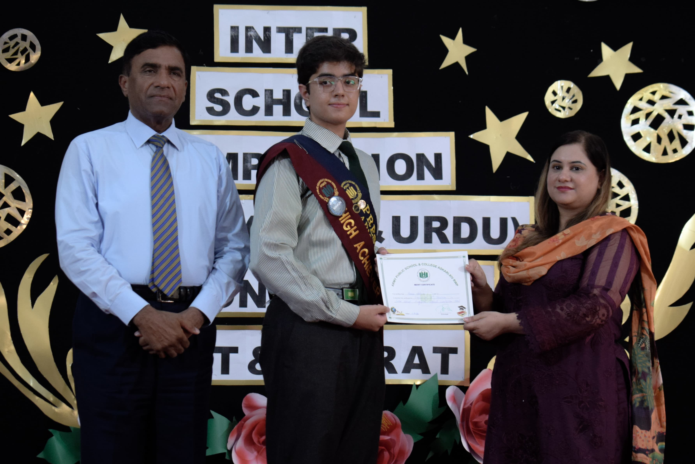

Rhetoric & Civic Leadership
Speaking, debating, and building rooms people step into.
Started giving speeches in Class 1, served as Class Rep through Class 5 and Head Boy in Class 5, then became a two-year Student Rep and Class 10 Student of the Year. Founded The Pakistan Diplomacy Consortium, served as APMUN Club president, stepped up as Secretary-General for a debate championship, and led Falaq Ki Umeed community work alongside ISPR Summer Camp 2025.
See chronological milestones →